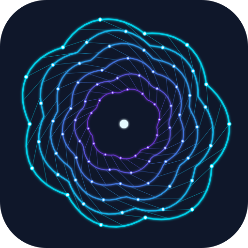

Laboratorium kimia komputasi interaktif: belajar teori dengan animasi, membangun molekul, menyusun input ORCA dan Gaussian, lalu menganalisis hasilnya.
An interactive computational chemistry lab: learn the theory through animations, build molecules, prepare ORCA and Gaussian inputs, and analyse the results.